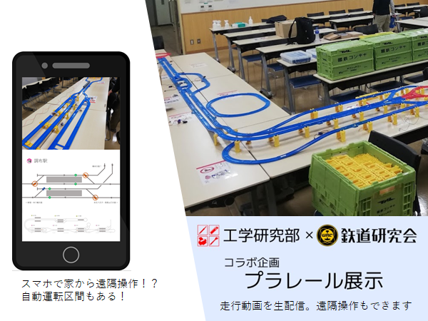

工研×鉄研プラレール展示

『工学研究部×鉄道研究会コラボ企画』自動！？遠隔！？進化したプラレール展示。列車やポイント、駅の停車をスマホやPCで遠隔操作できる他、自動運転区間とも直通します。
(工研×鉄研プラレールプロジェクトチーム)
Windowsで一曲流す

Windowsで一曲だけ流すプログラムのリポジトリです。音を流すといっても便利なラッパーを使わず、API直たたきして実現しています。気になることがあれば作者に聞いてみてください。
(Hatogamo)
部報第66号
部員の研究成果をまとめた「工研部報」第66号。電子工作からソフトウェアまで、幅広い話題を満載。
(部員)